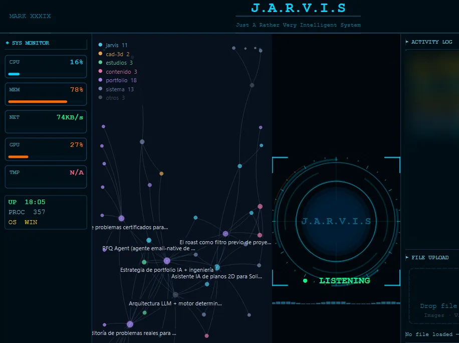

Caso 04 · Proyecto propio sobre base open source
Amplié un asistente de voz open source hasta convertirlo en mi sistema de trabajo
Partí de MARK XXXIX-OR, un asistente de voz para el ordenador, y le añadí memoria local, correo, calendario, coordinación con agentes de programación y un modo que funciona sin conexión.
14.335líneas de Python propias en 45 módulos nuevos
566pruebas automáticas, sin fallos en la última verificación
~11.600líneas del proyecto original del que partí
Base: MARK XXXIX-OR de FatihMakes, open source: voz en tiempo real con Gemini Live, interfaz HUD en PyQt y acciones básicas.
Mi aportación: 45 módulos nuevos, unas 3.200 líneas cambiadas en ficheros originales y 60 ficheros de pruebas. Medido comparando fichero a fichero con el original. Lo implementé dirigiendo a agentes de IA (Codex y Claude): yo especifico, decido y verifico.
El problema
El asistente original conversaba, ejecutaba acciones y tenía una memoria básica, pero no estaba conectado a mi base de conocimiento, ni a mi correo ni a mi calendario, y dejaba de servir cuando caía la conexión con el modelo de voz.
Qué añadí
- Memoria persistente local conectada a mi base de conocimiento en Markdown, con índice, memoria de sesión aprobada y una visualización de las notas como constelación según sus enlaces.
- Correo de Gmail por IMAP y SMTP, con la política de qué se lee y qué se envía separada del transporte; calendario iCalendar con lectura, escritura y vista semanal.
- Un puente local para coordinar desde JARVIS las sesiones de Codex y Claude, con permisos acotados.
- Un enrutador de órdenes local y determinista para seguir funcionando cuando Gemini Live no está disponible.
- Rutinas declarativas, índice de documentos y preparación de impresión 3D en Bambu Studio.
Decisiones de seguridad
- Las notas son datos, nunca instrucciones. Una nota no puede ordenarle nada al asistente ni borrarse por una orden ambigua.
- Confirmación en dos pasos para las acciones sensibles.
- Nada físico arranca solo: la impresión 3D se prepara y se abre con confirmación; imprimir sigue siendo manual.
- Prioridad a lo local: menos coste y funciones útiles aunque falle el servicio externo.
Resultado

La última verificación, del 5 de octubre de 2026, pasó dos veces las 566 pruebas sin fallos.
Limitaciones y siguiente paso
- El reconocimiento de voz en español tiene un plan de mejora diseñado pero todavía sin implementar.
- Está hecho para Windows y para mi forma de trabajar; no es un producto para terceros.
Herramientas
- Python
- PyQt6
- SQLite
- Gemini Live
- IMAP / SMTP
- iCalendar
- Codex
- Claude Code
- pytest